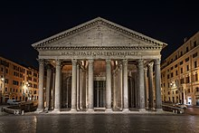

| Fact 1 | Fact 2 | Fact 3 | Photo | |
|---|---|---|---|---|
| Pantheon | It was built during Augustus's reign (27 BC - 14 AD). | The Pantheon's dome is still the world's largest unreinforced concrete dome today (nearly 2000 years after it was constructed. | This is one of the most well-preserved buildings from the era of Ancient Rome. |  From Wikipedia. https://en.wikipedia.org/wiki/Pantheon,_Rome. Retrieved on March 10, 2022. |
| Roman Forum | Its name in Latin is "Forum Romanum", and in Italian, it is "Foro Romano". | In Ancient Rome, the Roman Forum was the center of day-to-day life. | Many of Ancient Rome's oldest and most important structures were located here. |  From Wikipedia. https://en.wikipedia.org/wiki/Roman_Forum Retrieved on March 10, 2022. |
| Spanish Steps | The Spanish Steps landmark is composed of 135 steps. | It was constructed with a budget of 20,000 scudi, or $28361.26 CAD. | It is 29 meters long. |  From Wikipedia. https://en.wikipedia.org/wiki/Spanish_Steps Retrieved on March 10, 2022. |